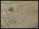

Day 2: Horse racesVase showing a horse race After the chariot races, the horse races take place. These are much shorter than the chariot races, just one lap of the arena. Jockeys ride bareback and some of the riders fall during the race. The horses that take part are owned by wealthy people, but only a few of these actually ride in the race. |
|
| back to day 2... | |